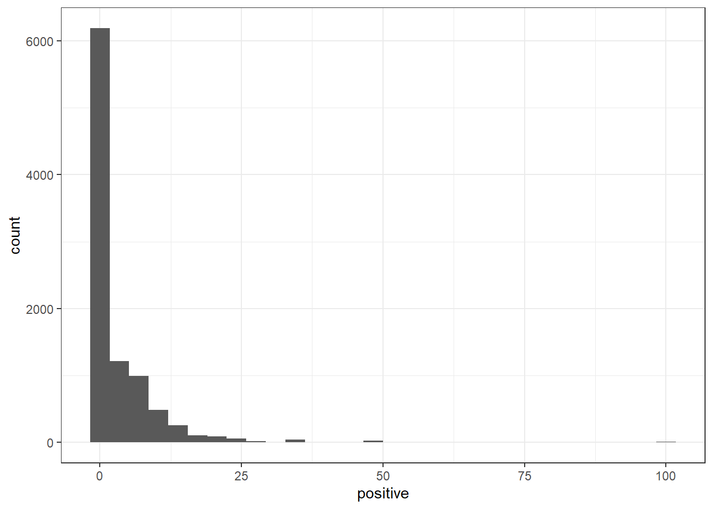
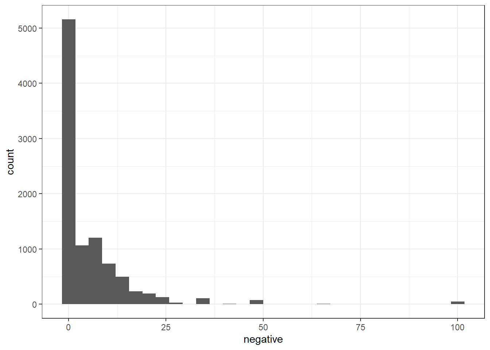
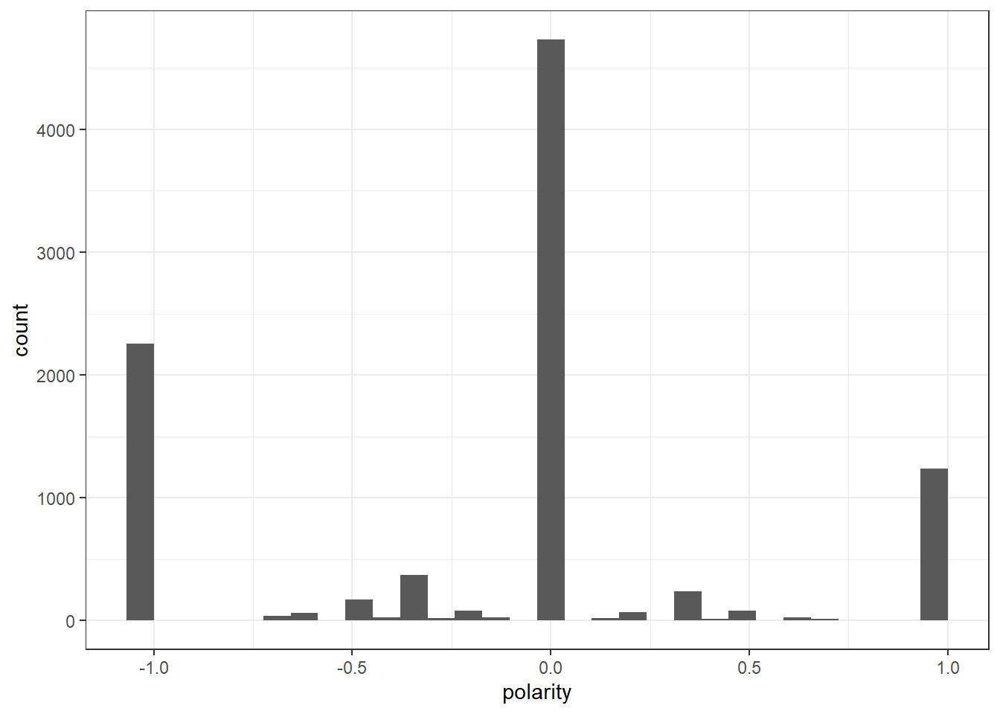

Code
knitr::opts_chunk$set(echo = TRUE, warning = FALSE)Rhowena Vespa
October 29, 2022
Attaching package: 'dplyr'The following objects are masked from 'package:stats':
filter, lagThe following objects are masked from 'package:base':
intersect, setdiff, setequal, unionPackage version: 3.2.3
Unicode version: 13.0
ICU version: 69.1Parallel computing: 8 of 8 threads used.See https://quanteda.io for tutorials and examples.Loading required package: NLP
Attaching package: 'NLP'The following object is masked from 'package:ggplot2':
annotateThe following objects are masked from 'package:quanteda':
meta, meta<-
Attaching package: 'tm'The following object is masked from 'package:quanteda':
stopwords------------------------------------------------------------------------------You have loaded plyr after dplyr - this is likely to cause problems.
If you need functions from both plyr and dplyr, please load plyr first, then dplyr:
library(plyr); library(dplyr)------------------------------------------------------------------------------
Attaching package: 'plyr'The following objects are masked from 'package:dplyr':
arrange, count, desc, failwith, id, mutate, rename, summarise,
summarize── Attaching packages
───────────────────────────────────────
tidyverse 1.3.2 ──✔ tibble 3.1.8 ✔ purrr 0.3.5
✔ tidyr 1.2.1 ✔ forcats 0.5.2
── Conflicts ────────────────────────────────────────── tidyverse_conflicts() ──
✖ NLP::annotate() masks ggplot2::annotate()
✖ plyr::arrange() masks dplyr::arrange()
✖ purrr::compact() masks plyr::compact()
✖ plyr::count() masks dplyr::count()
✖ plyr::failwith() masks dplyr::failwith()
✖ dplyr::filter() masks stats::filter()
✖ plyr::id() masks dplyr::id()
✖ dplyr::lag() masks stats::lag()
✖ plyr::mutate() masks dplyr::mutate()
✖ plyr::rename() masks dplyr::rename()
✖ plyr::summarise() masks dplyr::summarise()
✖ plyr::summarize() masks dplyr::summarize()Loading required package: usethisLoading required package: lattice
Attaching package: 'caret'
The following object is masked from 'package:purrr':
lift
Attaching package: 'quanteda.sentiment'
The following object is masked from 'package:quanteda':
data_dictionary_LSD2015This 4th Blog starts work on supervised machine learning from week 7 and 8. Using tweet replies as corpus, sentiment scores, polarity scores are calculated and visualized.
Supervised machine learning will continue on next blog post to build models for polarity classification
New names:
Rows: 9497 Columns: 79
── Column specification
──────────────────────────────────────────────────────── Delimiter: "," chr
(34): edit_history_tweet_ids, text, lang, source, reply_settings, entit... dbl
(18): id, conversation_id, referenced_tweets.replied_to.id, referenced_... lgl
(23): referenced_tweets.retweeted.id, edit_controls.is_edit_eligible, r... dttm
(4): edit_controls.editable_until, created_at, author.created_at, __tw...
ℹ Use `spec()` to retrieve the full column specification for this data. ℹ
Specify the column types or set `show_col_types = FALSE` to quiet this message.
• `` -> `...79`#tokenize and stemming
[1] "docname" "Segment" "WPS" "WC" "Sixltr"
[6] "Dic" "anger" "anticipation" "disgust" "fear"
[11] "joy" "negative" "positive" "sadness" "surprise"
[16] "trust" "AllPunc" "Period" "Comma" "Colon"
[21] "SemiC" "QMark" "Exclam" "Dash" "Quote"
[26] "Apostro" "Parenth" "OtherP" `stat_bin()` using `bins = 30`. Pick better value with `binwidth`.
Corpus consisting of 376 documents and 78 docvars.
text19 :
"4president The US gets zero benefit by supporting Ukraine...."
text28 :
" we’re winning?"
text78 :
" bold faced lie"
text131 :
" Prove it"
text138 :
" Bullshit clown"
text139 :
" Nothing has been won you clown"
[ reached max_ndoc ... 370 more documents ]`stat_bin()` using `bins = 30`. Pick better value with `binwidth`.
Corpus consisting of 884 documents and 78 docvars.
text24 :
" suck on that"
text25 :
" press x to doubt"
text26 :
" Hasbara troll.. shutthefuckup hoe"
text33 :
" Pharma didn't lose shit."
text78 :
" bold faced lie"
text91 :
" And inflation still went up"
[ reached max_ndoc ... 878 more documents ]Document-feature matrix of: 10 documents, 11,231 features (99.88% sparse) and 78 docvars.
features
docs so when do i get to see those cheap prices
text1 0 0 0 0 0 0 0 0 0 0
text2 1 1 1 1 1 1 1 1 1 1
text3 0 0 0 1 0 0 0 0 0 0
text4 0 0 0 0 0 1 0 0 0 0
text5 0 0 0 0 1 1 0 0 0 0
text6 0 0 0 0 0 0 0 0 0 0
[ reached max_ndoc ... 4 more documents, reached max_nfeat ... 11,221 more features ][1] 9497 11231[1] 9497 10Document-feature matrix of: 10 documents, 10 features (76.00% sparse) and 78 docvars.
features
docs anger anticipation disgust fear joy negative positive sadness surprise
text1 0 0 0 0 0 0 0 0 0
text2 0 0 0 0 0 1 0 0 0
text3 2 1 0 1 1 2 1 1 0
text4 0 0 0 0 0 1 1 0 0
text5 0 0 0 0 0 0 1 0 0
text6 1 0 0 0 0 1 0 1 0
features
docs trust
text1 0
text2 0
text3 1
text4 0
text5 0
text6 0
[ reached max_ndoc ... 4 more documents ][1] "dfm"
attr(,"package")
[1] "quanteda" [1] "doc_id" "anger" "anticipation" "disgust" "fear"
[6] "joy" "negative" "positive" "sadness" "surprise"
[11] "trust" `stat_bin()` using `bins = 30`. Pick better value with `binwidth`.
Error in data.frame(..., check.names = FALSE): object 'IRA_text_df' not foundError in corpus(IRAdf_nrc_CBIND): object 'IRAdf_nrc_CBIND' not found What use to cost 2-3 dollars at grocery stores now cost 5-7 dollars and we get less product. Great job.
How much of our money have you sent to Ukraine now joe?
4president The US gets zero benefit by supporting Ukraine. Absolutely nothing!
_di1200 Do you think the US will stand by when the Taliban use the “ARSENAL” left behind against an ally? \n\n5 years? \n10 years?\n\nPeace forever lol
we’re winning?
570SEASONS These are good provisions that will help people. Trump campaigned on a few of these too. https://t.co/KQmJRxKZYVError in dfm(IRAtokens_HC_lsd): object 'IRAtokens_HC_lsd' not foundError in head(IRAdfm_HC, 10): object 'IRAdfm_HC' not foundError in convert(IRAdfm_HC, to = "data.frame"): object 'IRAdfm_HC' not foundError in eval(expr, envir, enclos): object 'IRAmat_HC' not foundError in nrow(IRAmat_HC): object 'IRAmat_HC' not foundError in eval(expr, envir, enclos): object 'IRAmat_HC' not foundError in summary(IRAmat_HC$polarity): object 'IRAmat_HC' not foundError in ggplot(IRAmat_HC): object 'IRAmat_HC' not found 1. House, T., 2022. BY THE NUMBERS: The Inflation Reduction Act - The White House. [online] The White House. Available at: <https://www.whitehouse.gov/briefing-room/statements-releases/2022/08/15/by-the-numbers-the-inflation-reduction-act/> [Accessed 15 October 2022].
2. Biden, P. (2022, October 15). We pay more for our prescription drugs than any other nation in the world. it's outrageous. but now, instead of money going into the pockets of drug companies, it will go into your pockets in the form of lower drug prices. Twitter. Retrieved October 15, 2022, from https://twitter.com/POTUS/status/1581374573815431168
3. Robinson, J. S. and D. (n.d.). Welcome to text mining with r: Text mining with R. Welcome to Text Mining with R | Text Mining with R. Retrieved October 15, 2022, from https://www.tidytextmining.com/ ---
title: "Blog 4 -Supervised Learning Part 1"
author: "Rhowena Vespa"
desription: "Dictionary and Polarity scores"
date: "10/29/2022"
format:
html:
toc: true
code-fold: true
code-copy: true
code-tools: true
categories:
- Blog 4
- Polarity1
- dictionary
- healthcare
- supervised learning
- ggplot2
---
```{r}
#| label: setup
#| warning: false
knitr::opts_chunk$set(echo = TRUE, warning = FALSE)
```
```{r}
library(readr)
library(dplyr)
library(quanteda)
library(quanteda.textstats)
library(quanteda.textplots)
library(ggplot2)
library(DT)
library(tm)
library(stringr)
library(tidytext)
library(plyr)
library(tidyverse)
library(quanteda.textmodels)
library(devtools)
library(caret)
library(quanteda.dictionaries)
#library(devtools)
#devtools::install_github("kbenoit/quanteda.dictionaries")
library(quanteda.dictionaries)
library(syuzhet)
#remotes::install_github("quanteda/quanteda.sentiment")
library(quanteda.sentiment)
```
This 4th Blog starts work on supervised machine learning from week 7 and 8. Using tweet replies as corpus,
sentiment scores, polarity scores are calculated and visualized.
Supervised machine learning will continue on next blog post to build models for polarity classification
```{r}
# Read in data
IRA<- read_csv("IRA_med.csv")
#remove @twitter handles
IRA$text <- gsub("@[[:alpha:]]*","", IRA$text) #remove Twitter handles
```
```{r}
IRA_corpus <- corpus(IRA,text_field = "text")
```
#tokenize and stemming
```{r}
IRA_tokens <- tokens(IRA_corpus)
IRA_tokens <- tokens_wordstem(IRA_tokens)
```
# USING LECTURE week8 --NRC sentiment
```{r}
# use liwcalike() to estimate sentiment using NRC dictionary
IRAreviewSentiment_nrc <- liwcalike(IRA_corpus, data_dictionary_NRC)
names(IRAreviewSentiment_nrc)
```
```{r}
ggplot(IRAreviewSentiment_nrc) +
geom_histogram(aes(x = positive)) +
theme_bw()
```
```{r}
IRA_corpus[which(IRAreviewSentiment_nrc$positive > 15)]
```
```{r}
ggplot(IRAreviewSentiment_nrc) +
geom_histogram(aes(x = negative)) +
theme_bw()
```
```{r}
IRA_corpus[which(IRAreviewSentiment_nrc$negative > 15)]
```
```{r}
# create a full dfm for comparison
IRA_Dfm <- tokens(IRA_corpus,
remove_punct = TRUE,
remove_symbols = TRUE,
remove_numbers = TRUE,
remove_url = TRUE,
split_hyphens = FALSE,
include_docvars = TRUE) %>%
tokens_tolower() %>%
dfm()
head(IRA_Dfm, 10)
dim(IRA_Dfm)
# convert corpus to dfm using the dictionary
IRADfm_nrc <- tokens(IRA_corpus,
remove_punct = TRUE,
remove_symbols = TRUE,
remove_numbers = TRUE,
remove_url = TRUE,
split_hyphens = FALSE,
include_docvars = TRUE) %>%
tokens_tolower() %>%
dfm() %>%
dfm_lookup(data_dictionary_NRC)
dim(IRADfm_nrc)
head(IRADfm_nrc, 10)
class(IRADfm_nrc)
```
# POLARITY
```{r}
IRAdf_nrc <- convert(IRADfm_nrc, to = "data.frame")
names(IRAdf_nrc)
IRAdf_nrc$polarity <- (IRAdf_nrc$positive - IRAdf_nrc$negative)/(IRAdf_nrc$positive + IRAdf_nrc$negative)
IRAdf_nrc$polarity[(IRAdf_nrc$positive + IRAdf_nrc$negative) == 0] <- 0
ggplot(IRAdf_nrc) +
geom_histogram(aes(x=polarity)) +
theme_bw()
```
# NEW DATAFRAME WITH TEXT AND POLARITY
```{r}
IRAdf_nrc_CBIND <- as.data.frame(cbind(IRAdf_nrc, IRA_text_df))
```
```{r}
IRAdf_nrc_CBIND <- as.character(IRAdf_nrc_CBIND)
typeof(IRAdf_nrc_CBIND)
```
# NEW CORPUS with polarity scores
```{r}
IRApolarity_corpus <- corpus(IRAdf_nrc_CBIND)
```
```{r}
writeLines(head(IRA_corpus[which(IRAdf_nrc$polarity == 1)]))
```
# APPLY DICTIONARY within context
```{r}
# tokenize corpus
IRAtokens <- tokens(IRA_corpus, remove_punct = TRUE)
# what are the context (target) words or phrases
IRA_words <- c("inflation","POTUS", "price*","joe", "biden", "trump","medicare","drug","cost","america*","won","lost")
```
```{r}
# retain only our tokens and their context
IRAtokens_HC <- tokens_keep(IRAtokens, pattern = phrase(IRA_words), window = 40)
```
```{r}
IRAdata_dictionary_LSD2015_pos_neg <- data_dictionary_LSD2015[1:2]
IRAtokens_HC_lsd <- tokens_lookup(IRAtokens_HC,
dictionary = data_dictionary_LSD2015_pos_neg)
```
# COnvert to dfm
```{r}
IRAdfm_HC <- dfm(IRAtokens_HC_lsd)
head(IRAdfm_HC, 10)
```
```{r}
# convert to data frame
IRAmat_HC <- convert(IRAdfm_HC, to = "data.frame")
```
```{r}
# drop if both features are 0
IRAmat_HC <- IRAmat_HC[-which((IRAmat_HC$negative + IRAmat_HC$positive)==0),]
```
```{r}
# print a little summary info
paste("We have ",nrow(IRAmat_HC)," tweets replies that mention positive or negative words in the context of Inflation terms.", sep="")
```
```{r}
# create polarity scores
IRAmat_HC$polarity <- (IRAmat_HC$positive - IRAmat_HC$negative)/(IRAmat_HC$positive + IRAmat_HC$negative)
# summary
summary(IRAmat_HC$polarity)
# plot
ggplot(IRAmat_HC) +
geom_histogram(aes(x=polarity)) +
theme_bw()
```
## REFERENCES
1. House, T., 2022. BY THE NUMBERS: The Inflation Reduction Act - The White House. [online] The White House. Available at: <https://www.whitehouse.gov/briefing-room/statements-releases/2022/08/15/by-the-numbers-the-inflation-reduction-act/> [Accessed 15 October 2022].
2. Biden, P. (2022, October 15). We pay more for our prescription drugs than any other nation in the world. it's outrageous. but now, instead of money going into the pockets of drug companies, it will go into your pockets in the form of lower drug prices. Twitter. Retrieved October 15, 2022, from https://twitter.com/POTUS/status/1581374573815431168
3. Robinson, J. S. and D. (n.d.). Welcome to text mining with r: Text mining with R. Welcome to Text Mining with R | Text Mining with R. Retrieved October 15, 2022, from https://www.tidytextmining.com/